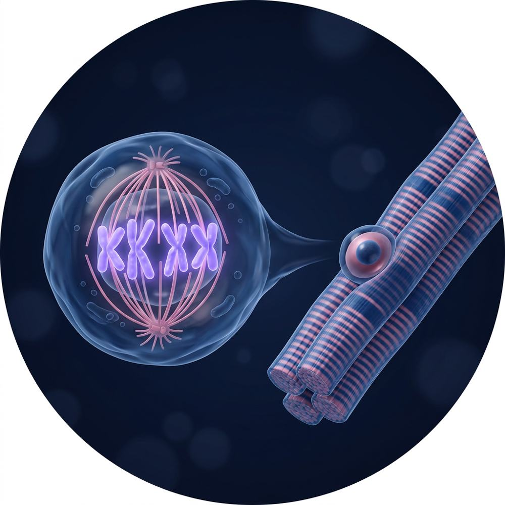

从细胞分裂到
照射后的肌肉修复

AI 生成示意图 · 分裂细胞与肌纤维一句话：辐射打断 DNA，检查点让周期停下，停下后的结局决定组织能不能修好
示意图，自绘。
细胞周期
“先复制、再平分”的有序流程，由 CDK–cyclin 驱动。
DNA 损伤应答
发现断裂、拉响警报、暂停周期、调修复工具。
细胞命运
修好就继续；修不好就衰老、凋亡或在分裂中崩溃。
骨骼肌
肌纤维不再分裂，修复靠 G0 里的卫星细胞重新进入周期。
四个时期、一个旁路（G0）、三个关口
示意图，自绘；各期长短为示意，不同细胞差别很大。
发动机：CDK + cyclin
CDK 本身没活性，结合 cyclin 才开动；不同时期换不同 cyclin，所以周期能一段一段往前推。
熄火：APC/C
给 cyclin 贴泛素标签送去降解，CDK 活性落下，细胞才能退出有丝分裂。
刹车：CDK 抑制蛋白
p21、p16 等直接压住 CDK。p21 是本库后面反复出现的主角。
手术室类比
三个关口 ≈ 手术安全核对的三个时点：麻醉前核对、切皮前暂停、离室前核对。前一步没过，不进下一步。
感受 → 传递 → 执行：一条从断裂到“暂停周期”的警报链
AI 生成示意图：双链断裂与修复蛋白；标注为本笔记添加。
感受器
MRN 复合物发现双链断裂；RPA 包裹单链 DNA。断裂处组蛋白 H2AX 被磷酸化成 γH2AX，是常用的损伤读数。
传递
ATM（双链断裂为主）→ Chk2；ATR（单链、复制压力为主）→ Chk1。
执行 · G1 停顿
p53 稳定 → p21 抑制 CDK → 停在 G1。
执行 · G2 停顿
Cdc25 失活 → CDK1 无法激活 → 停在 G2。
修哪种损伤用哪套工具，而且受周期时相限制
| 通路 | 修什么 | 周期限制 |
|---|---|---|
| BER 碱基切除 | 单个氧化或受损碱基 | 全周期 |
| NER 核苷酸切除 | 使 DNA 变形的大损伤（如紫外线二聚体） | 全周期 |
| MMR 错配修复 | 复制中产生的错配 | 主要在复制后 |
| HR 同源重组 | 双链断裂，按姐妹染色单体精确修 | S / G2 需要姐妹染色单体 |
| NHEJ 非同源末端连接 | 双链断裂，直接接上，可能出错 | 全周期 G1 主力 |
HR像照着原图补
拿复制好的姐妹染色单体当模板，补得准；但只有 S/G2 才有模板。
NHEJ像直接缝合
断端修整后直接接起来，快、随时可用，但可能丢失或插入几个碱基。
关联：同一个双链断裂，在 G1 多走 NHEJ，在 S/G2 可以走 HR，所以“照射时细胞处在哪一期”会影响修复质量。第 6–8 周重点展开。
停下之后有五种结局，组织层面的后果完全不同
示意图，自绘；右侧灰字为对肌肉修复的含义（关联）。
先记住一条：p21 一头连着检查点（暂停），一头连着衰老（永久停）。它是从细胞周期走到辐射骨骼肌课题的第一座桥。
肌纤维不分裂；修复靠卫星细胞从 G0 重新进入周期
 1卫星细胞（Pax7⁺）2基膜3肌纤维：多核、不分裂
4毛细血管5FAP6巨噬细胞
1卫星细胞（Pax7⁺）2基膜3肌纤维：多核、不分裂
4毛细血管5FAP6巨噬细胞AI 生成示意图，比例非真实；标注为本笔记添加。
事实 · 谁会分裂
肌纤维是有丝分裂后细胞；卫星细胞位于基膜与肌膜之间、表达 Pax7、平时处于 G0；FAP、内皮、巨噬等单个核细胞也会分裂。
流程 · 损伤后的再生
① 卫星细胞激活、离开 G0 → ② 增殖扩增 → ③ 分化、融合修补肌纤维 → ④ 一部分回到 G0 补充干细胞池。
推测 · 带着这个问题读
照射时卫星细胞多在 G0，DNA 损伤可能“潜伏”到被唤醒、进入周期时才暴露。留到第 9–12 周用文献检验。
本周目标：每个都能用一句话说清（完整中英表见 docs/glossary-v0.1.md）
| 术语 | 一句话 | 术语 | 一句话 | 术语 | 一句话 |
|---|---|---|---|---|---|
| CDK | 周期发动机，需 cyclin | cyclin | 随时期升降的 CDK 搭档 | APC/C | 给 cyclin 等贴降解标签 |
| MPF | 即 CDK1–cyclin B | 限制点 R | 哺乳动物 G1 不回头点 | Start | 酵母的 G1 承诺点 |
| 检查点 | 前一步没完成不进下一步 | SAC | 纺锤体组装检查点 | Rb | 扣住 E2F 的刹车蛋白 |
| E2F | 启动 S 期基因的转录因子 | p53 | 损伤后的“总安全官” | p21 | p53 下游的 CDK 抑制蛋白 |
| p16 | 抑制 CDK4/6 的刹车 | Wee1 | 给 CDK1 加抑制性磷酸化 | Cdc25 | 去掉该磷酸化、启动 CDK1 |
| ATM | 双链断裂的主警报激酶 | ATR | 单链/复制压力警报激酶 | Chk1/Chk2 | 把警报传给执行者 |
| γH2AX | 断裂处的磷酸化组蛋白 | HR | 同源重组，精确修复 | NHEJ | 直接连接，可能出错 |
| cohesin | 把姐妹染色单体绑在一起 | separase | 剪开 cohesin 的酶 | securin | separase 的抑制蛋白 |
| 动粒 | 染色体上挂纺锤丝处 | G0 | 可逆退出周期 | 衰老 | 永久停止分裂 |
| SASP | 衰老细胞的分泌表型 | 卫星细胞 | 肌肉干细胞，Pax7⁺ | FAP | 纤维脂肪祖细胞 |
每天：读 25 分钟 → 合上回忆 10 分钟 → 卡片复习 10 分钟
| 时间 | 读（25 分钟） | 闭卷回忆（10 分钟） |
|---|---|---|
| Day 1 | 第 02 页 + Cooper 第 14 章开头 | 默画周期圈：四期、G0、三个关口 |
| Day 2 | 第 03–04 页 | 警报链三层；五套修复各修什么 |
| Day 3 | 第 05 页 | p21 为什么是“桥”？两句话说清 |
| Day 4 | 第 06 页 | 卫星细胞从静息到融合的四步 |
| Day 5 | 第 07 页 | 遮住右列，逐个说出定义 |
讲得出来才算懂；卡住的地方就是下周要补的地方
费曼开头
细胞想分裂，就要先把 DNA 抄一遍再平分。整个过程靠一台叫 CDK 的发动机推着走，路上有三个安检站。辐射把 DNA 打断后，安检站会把细胞拦下来修……
接着往下写，写到肌肉为止。需要用术语糊弄过去的地方标红，下周查。
记忆G1、S、G2、M 各做什么？DNA 含量怎么变？
答案
G1 生长准备（2C）；S 复制 DNA（2C→4C）；G2 检查并准备分裂（4C）；M 分裂（回到 2C）。
理解为什么 HR 主要在 S/G2？
答案
HR 需要姐妹染色单体当模板，复制之后才有。
应用敲掉 p53 的细胞受照射后，最可能失去哪个关口？
答案
G1/S 停顿（p53→p21），细胞更容易带伤进入 S 期。
分析肌纤维不分裂，为什么照射仍会损害肌肉再生？
答案
再生依赖卫星细胞重新进入周期；它们以及 FAP、内皮等细胞受损或衰老，都会影响修复。
评价“衰老细胞不分裂，所以无害”对吗？
答案
不对：衰老细胞会通过 SASP 分泌炎症和促纤维化因子，改变微环境。
本周只读入门材料；文献从周六开始
免费合法教材
- Cooper《The Cell》第 2 版第 14 章：NCBI Bookshelf
- Alberts《Molecular Biology of the Cell》第 4 版第 17 章：NCBI Bookshelf
- Morgan《The Cell Cycle: Principles of Control》2007：作者实验室页面
- 2001 年诺贝尔奖：nobelprize.org
本库约定
- 示意图为自绘或 AI 生成，已注明；不收录原文图
- “事实 / 关联 / 推测”分开标注
- 文献信息均经 PubMed 核对
- 下一单元：U01 细胞周期总览（第 2 周）
- 延伸：补充单元 X01 · 辐射到底打中了什么